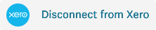
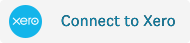

<div class="internal-loader" fxLayoutAlign="center start" *ngIf="isLoading" fxFlexFill>
    <app-loader></app-loader>
</div>
<div>
  <div class="page-info">
    <div fxLayout="row" fxLayoutAlign="start center" class="page-info--description" *ngIf="!isLoading">
      Set up Xero Tenant.
      <a href="https://www.fylehq.com/help/en/articles/4601898-onboarding-process-to-set-up-fyle-xero-integration" target="_blank" rel="noopener noreferrer" class="read-more-link" fxLayout="row" fxLayoutAlign="start center">Read more<mat-icon class="read-more-link--icon">open_in_new</mat-icon></a>
    </div>
  </div>
    <form class="general-mappings--form" [formGroup]="tenantForm" *ngIf="!isLoading">
      <div fxLayout="column" fxLayoutAlign="start stretch">
        <div class="mat-body-strong">
          Xero Tenant
          <mandatory-field></mandatory-field>
        </div>
        <mat-form-field floatLabel="always" appearance="outline" required>
          <mat-select class="general-mappings--input" placeholder="Select Xero Tenant" formControlName="xeroTenant">
            <mat-option *ngFor="let tenant of xeroTenants;" [value]="tenant.destination_id">
              {{tenant.value}}
            </mat-option>
          </mat-select>
        </mat-form-field>
        <mandatory-error-message listName="tenant" *ngIf="tenantForm.controls.xeroTenant.touched && !tenantForm.controls.xeroTenant.valid"></mandatory-error-message>

        <div fxLayout="row" class="mat-body-strong" *ngIf="tenantMappings">
          <div class="current-status">
            Current Status
          </div>

          <div class="current-status-btn">
            <button mat-raised-button class="status"
              [ngClass]="{'status--connected': connectedToXero, 'status--disconnected' : !connectedToXero }">
              {{connectedToXero ? 'Active' : 'Inactive'}}
            </button>
          </div>

        </div>

        <div fxLayout="row">
          <div>
            <button *ngIf="!tenantMappings" [disabled]="!tenantForm.valid" class="configurations--save-btn" mat-flat-button color="primary" (click)="submit()" type="submit">
              Save
            </button>
          </div>
          <div class="xero-btn" *ngIf="tenantMappings">
            
            
          </div>
        </div>
      </div>
    </form>
  </div>